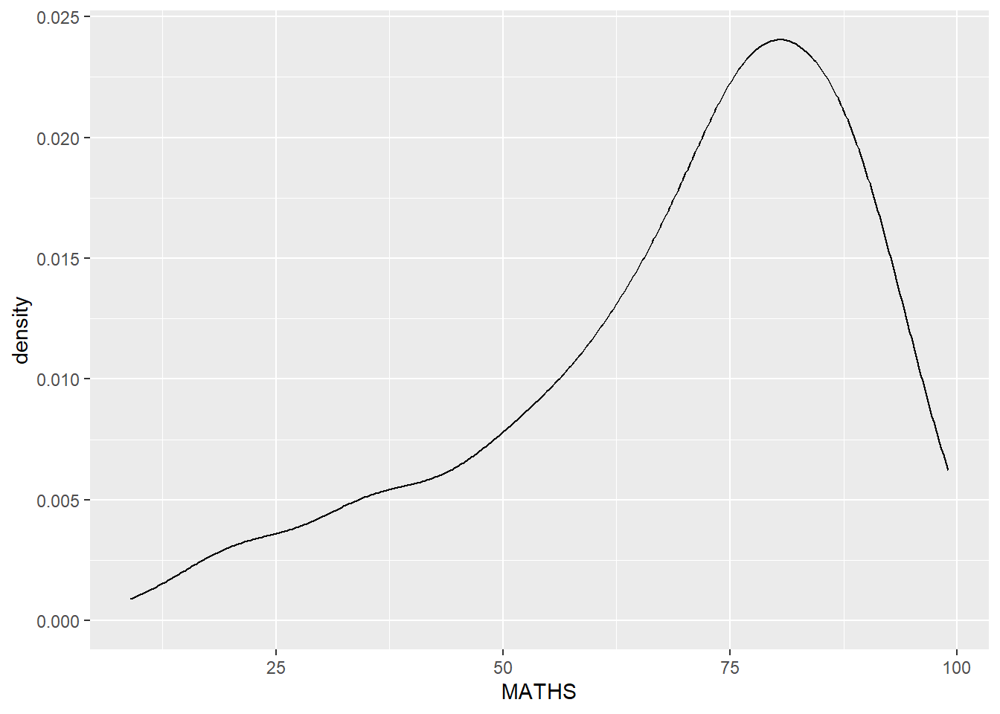

library(ggplot2)
library(readr)
library(tidyverse)
exam_data <- read_csv("data/Exam_data.csv")Hands On Exercise 1
Quarto
Quarto enables you to weave together content and executable code into a finished document. To learn more about Quarto see https://quarto.org.
#import data (rmb to set working directory to common file) # rmb to activate readr package on right bottom panel
#plotting with BaseR for simple histogram
hist(exam_data$MATHS)
why ggplot preferred - more customisations, wider range plot, integration with other packs
plotting with ggplot
ggplot(data=exam_data, aes(x = MATHS)) + geom_histogram(bins=10, boundary = 100, color="black", fill="grey") + ggtitle("Distribution of Maths scores")
Using layers and features - geombar
ggplot(data=exam_data, aes(x=RACE)) + geom_bar()
feature - geom_dotplot
ggplot(data=exam_data, aes(x = MATHS)) + geom_dotplot(dotsize = 0.5)
feature - geom_histogram
ggplot(data=exam_data, aes(x = MATHS)) + geom_histogram()
feature - modify with geom( )
ggplot(data=exam_data, aes(x= MATHS)) + geom_histogram(bins=20,color="black",fill="light blue")
feature - modifying aesthetic
ggplot(data=exam_data, aes(x= MATHS, fill = GENDER)) + geom_histogram(bins=20, color="grey30")
density estimate plot
ggplot(data=exam_data, aes(x = MATHS)) + geom_density()
Introducing another layer with gender
ggplot(data=exam_data, aes(x = MATHS, colour = GENDER)) + geom_density()
Boxplot
ggplot(data=exam_data, aes(y = MATHS,x= GENDER)) +geom_boxplot()
Using notch plot to see differing medians
ggplot(data=exam_data, aes(y = MATHS, x= GENDER)) + geom_boxplot(notch=TRUE)
violin plot to see distribution
ggplot(data=exam_data, aes(y = MATHS, x= GENDER)) + geom_violin()
geom point for scatter plot
ggplot(data=exam_data, aes(x= MATHS, y=ENGLISH)) + geom_point()
Combining geom point and boxplot
ggplot(data=exam_data, aes(y = MATHS, x= GENDER)) + geom_boxplot() +geom_point(position="jitter", size = 0.5)Introducing statistics into plot
ggplot(data=exam_data, aes(y = MATHS, x= GENDER)) + geom_boxplot() + stat_summary(geom = "point",fun ="mean",colour ="red",size=4)
using geom() to override default stat value.
ggplot(data=exam_data, aes(y = MATHS, x= GENDER)) + geom_boxplot() + geom_point(stat="summary",fun="mean",colour ="red",size=4)
Adding best fit curve into scatter plot
ggplot(data=exam_data, aes(x= MATHS, y=ENGLISH)) + geom_point() + geom_smooth(linewidth=0.5)
facet-wrap
ggplot(data=exam_data, aes(x= MATHS)) + geom_histogram(bins=20) + facet_wrap(~ CLASS)
facet-wrap grid
ggplot(data=exam_data, aes(x= MATHS)) + geom_histogram(bins=20) + facet_grid(~ CLASS)
flipping coordinates - horizontal to vertical
ggplot(data=exam_data, aes(x=RACE)) + geom_bar() + coord_flip()
modifying x and y axis
ggplot(data=exam_data, aes(x= MATHS, y=ENGLISH)) + geom_point() + geom_smooth(method=lm, size=0.5)
defining plot so that axis is the same
ggplot(data=exam_data, aes(x= MATHS, y=ENGLISH)) + geom_point() + geom_smooth(method=lm, size=0.5) +coord_cartesian(xlim=c(0,100), ylim=c(0,100))
introducing themes - grey
ggplot(data=exam_data, aes(x=RACE)) + geom_bar() + coord_flip() + theme_gray()
theme - classic
ggplot(data=exam_data, aes(x=RACE)) + geom_bar() + coord_flip() + theme_classic()
theme - minimal
ggplot(data=exam_data, aes(x=RACE)) + geom_bar() + coord_flip() + theme_minimal()